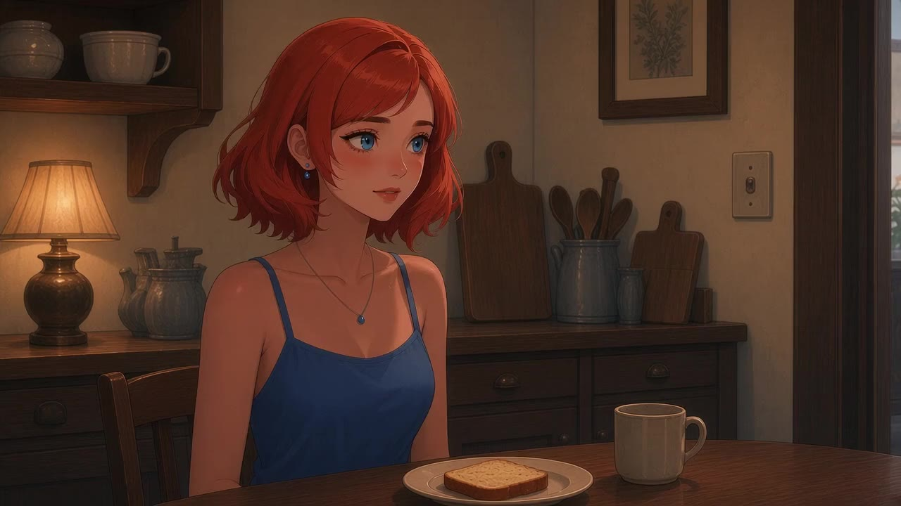
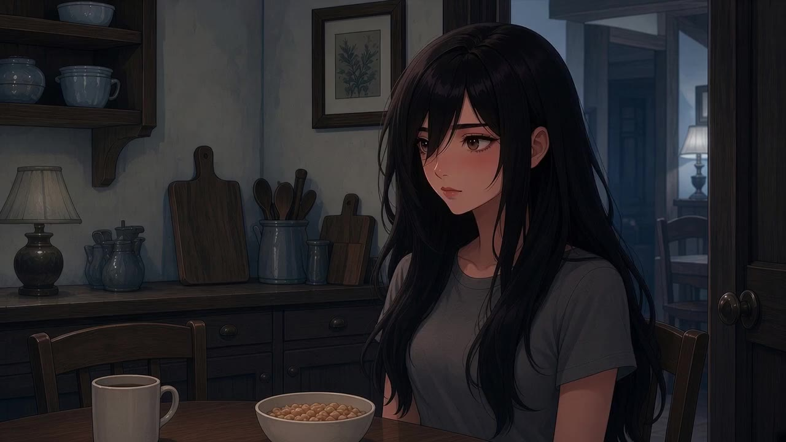
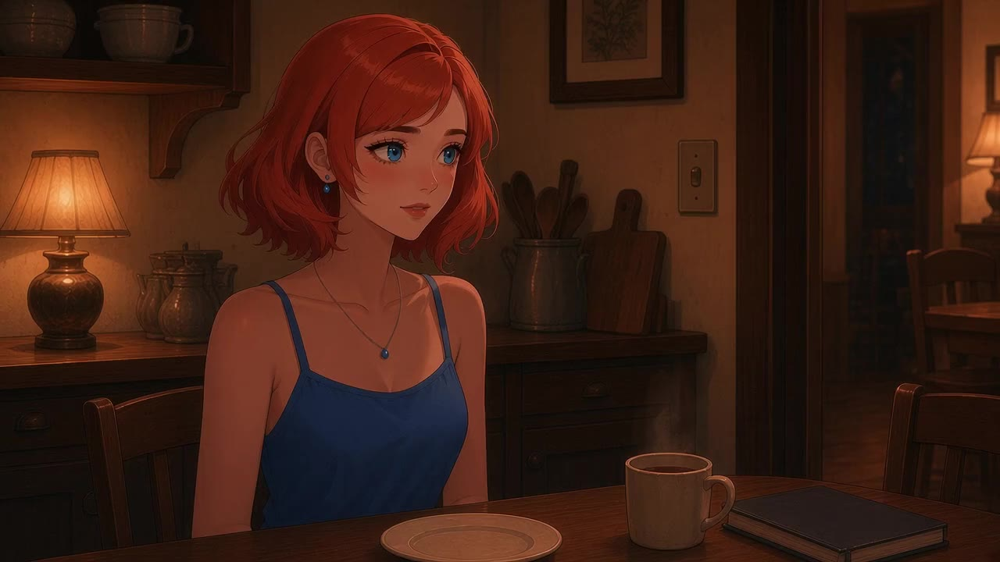

Short everyday conversations with Demi and Wanda at their kitchen table. Tap to play each line, then talk it through.

Night · dinner and bedtime

Morning · chores and the day ahead

Night · deadlines and helping out